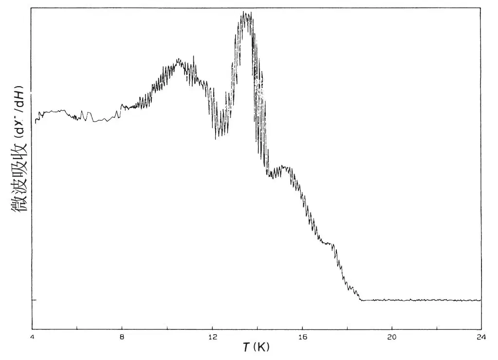
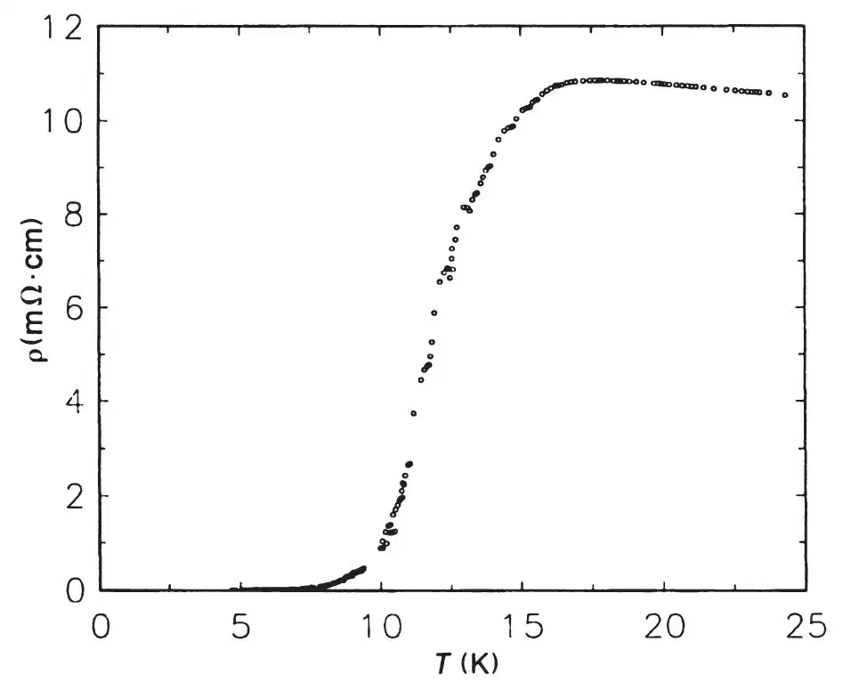
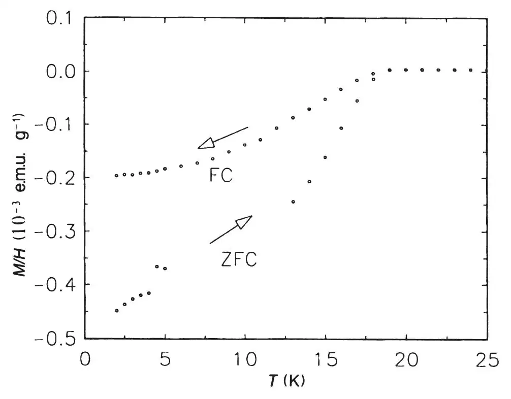

英文
英文赫巴德等
编者按
1990年制备大量笼状碳C60分子方法的发现引起了人们对其物理和化学性质的集中研究。本文中，新泽西州的美国电话电报公司贝尔实验室的阿特·赫巴德和同事们报道了这项工作中的一个最显著的成果：当掺入碱金属时，C60在低温下变成超导体，能够无阻导电。这是贝尔实验室继发现掺杂入金属的C60具有金属导电性后的又一个发现。与一般的金属相比，它的超导起始温度相对较高，从而激发了人们使之更高的期望，不久，这就成为了事实。尽管此发现还未推广至实际应用中，但其引起了巨大的理论研究兴趣。 英文
宏观量的C60和C70（富勒烯）的合成[1]已经激发了很多关于其化学和物理性质的研究[2,3]。最近我们的实验表明：掺碱金属后的C60和C70具有导电性[4]。本文中我们论述了针对掺钾C60的薄膜样品和块状样品的低温研究，并且说明了这种材料能变得具有超导性。超导性是通过微波、电阻率和迈斯纳效应的测试来说明的。我们对多晶粉末和薄膜样品分别进行了研究。结果表明，薄膜呈现出以16 K为起始温度的电阻转变，而且在温度接近5 K时就具有实质上的零电阻。块状样品呈现出明显的迈斯纳效应，且温度达到18 K时出现了随磁场变化的微波吸收现象。到目前为止，18 K是人们所观测到的分子超导体最高的超导性起始温度值。 英文
掺碱金属的富勒烯（AxCn）对于空气的敏感性限制了样品的制备和表征技术的选择。为了避免样品变质，我们让碱金属蒸气和C60在高真空或者是具有氦分压的密封管中进行反应。C60是利用色谱法[1]对富勒烯固体[2]进行提纯且于160 ℃在真空中加热除去溶剂而得到的。 英文
将少量的单体富勒烯（约为0.5 mg）与碱金属同置于石英管中，并在真空条件下密封。将这些样品进行一系列热处理后，通过9 GHz微波损失实验进行超导性检测[5]。初步的检测表明，只有掺钾的C60表现出与超导转变相一致的反应（如图1所示）。由于这个原因，再加上KxC60显示出最高的薄膜导电性的事实[1]，我们集中研究了掺钾的化合物。 英文

图1．KxC60在20 Oe的静场中的微波损失关于温度的函数 英文
对掺钾的C60薄膜进行导电性测试，薄膜于先前曾描述过的[4]整体型全玻璃装置中制备。这种反应容器是在反应前具有氦分压的条件下密封的。这种构造可以同时允许原位掺杂和薄膜的低温研究。所有的测量均在四端范德堡配置中进行，条件为17 Hz频率的3 μA交流电。图2显示出厚度为960Å的KxC60薄膜的电阻率随温度的变化关系。用钾掺杂薄膜，直到电阻率下降至5×10–3 Ω·cm为止。在将样品冷却至20 K左右时，电阻率增大了2倍。在温度低于16 K时，电阻率开始减小；在温度为5 K以下时得到零阻抗（<正常态时的10–4）。电阻变化10%~90%所对应的温度间隔为4.6 K。温度为4 K时我们测得临界电流的下限值为40 A·cm–2。 英文

图2．厚度为960 Å的KxC60薄膜电阻率随温度的变化关系 英文
标称成分为K3C60的块状多晶样品是通过将29.5 mg C60与4.8 mg钾反应来制备的。通过控制体积调节钾的含量，即在干燥器中把充满钾的耐热玻璃毛细管裁割至适当体积。将一个装有C60的5 mm熔封石英管与一个放有含钾的毛细管的较大管子联结在一起，使反应得以进行。在抽真空并重新填入10–2 torr的氦作为随后的低温测量中的热交换气体后，将管密封。保持含C60的管末端处于室温状态，在温度为200 ℃的炉子中将钾从毛细管中蒸馏出来。在这个温度下观察到钾与石英管的某些反应，可以看到有深褐色的褪色斑点。之后能够观察到未反应的钾。接着将钾蒸馏到C60末端，用密封方法将管子截短至约8 cm，并将其加热到温度为200 ℃，保持36小时。最后，将管子再次密封至约4 cm的长度以备磁学检测。 英文
用超导量子干涉磁强计测试了标称成分为K3C60的样品的直流磁化随温度变化的关系（如图3所示）。在零场中，冷却样品到2 K，再对样品加50 Oe的磁场。加热温度直到18 K时，样品都可将该场排出；这就证明了一个超导相的存在。通过在50 Oe的场冷却，已明确地说明了样品中超导性的体特征。温度低于18 K时出现了明显的迈斯纳效应（磁通排出）。磁化曲线的形状，特别是低温下与温度无关的现象，表明该样品具有良好的超导性。同样值得我们注意的是相当狭窄的转变温度范围。零场冷却曲线对应的磁通排出的大小表明超导体积比为1%。如此小的超导体积比可能是由于非理想掺杂或者是样品的粒状性质。但是，场冷却曲线的迈斯纳效应相对于总排出量的大的数值表明样品电连通区域中显著的体超导性。 英文

图3．KxC60晶体样品的磁化随温度的变化关系。箭头指出了场冷却（FC）与零场冷却（ZFC）曲线中的温度扫描方向。 英文
得到普遍认可的超导性检测，即零电阻的转变与表现为磁场排出的迈斯纳效应，明确地证明了KxC60中超导性的存在。18 K的转变温度是到目前为止关于分子超导体报道中最高的温度值。这可以与以前报道的插钾层的石墨在0.55 K时超导性的出现[6]相比较。我们期望对成分与结晶度的优化能够进一步改善超导性质。 英文
（王耀杨 翻译；韩汝珊郭建栋 审稿）